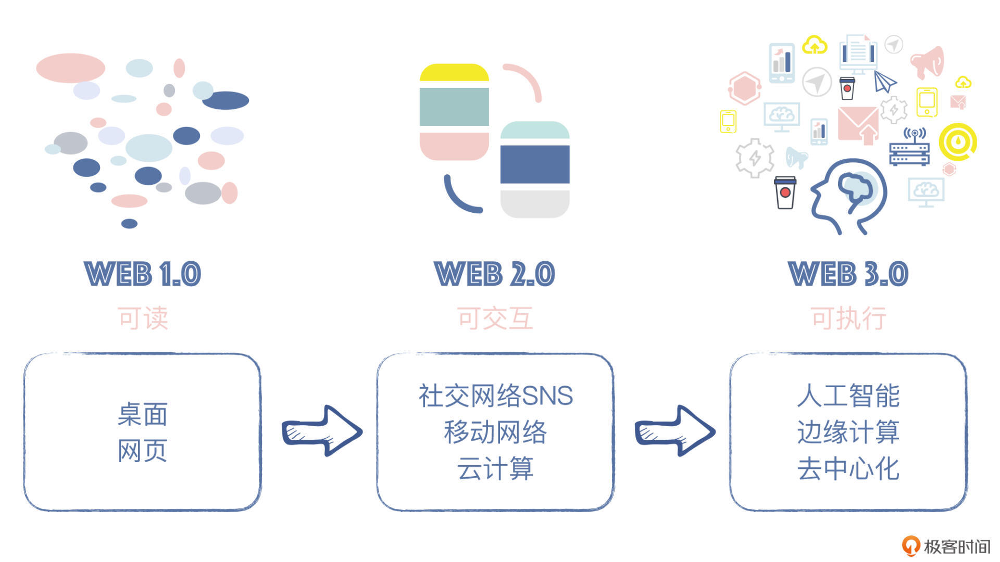

- 00 开篇词 Web 3.0：一场已经开启的互联网革命！.md.html
- 01 我们为什么需要Web 3.0？.md.html
- 02 公链：从计算分层开始.md.html
- 03 继续分层：身份和激励.md.html
- 04 NFT（一）：数据确权及其文化和商业价值的发现.md.html
- 05 NFT（二）：数据确权及其文化和商业价值的发现.md.html
- 06 边玩边赚能给游戏和电商带来新的商业模式吗？.md.html
- 07 Web 3.0社交和创作者经济.md.html
- 08 区块链：从底层重构金融.md.html
- 09 DeFi：“三无模式”开辟金融新蓝海.md.html
- 10 关于DAO的七个真相和两个趋势（一）.md.html
- 11 关于DAO的七个真相和两个趋势（二）.md.html
- 12 DeFi的空中楼阁能盖多高？.md.html
- 13 代码和法律，哪个更强？.md.html
- 14 Web 3.0正在形成的合力.md.html
- 特别放送 Yuga Labs：Web 3.0迪士尼的谛造之路.md.html
- 结束语 Web 3.0时代，你的创造和收获！.md.html
- 捐赠
01 我们为什么需要Web 3.0？
你好，我是郭大治。这是咱们专栏的第一节课，欢迎和我一起探索Web 3.0这个新世界，在接下来的时间里，我也会把我的一些思考和感悟分享给你，希望能与你一起成长。
Web 3.0并不是什么新名词，早在2006年左右，Netflix、Yahoo等公司的创始人在TechNet峰会上就提到了Web 3.0，但在过去了十几年之后，对于今天的大多数人来说， Web 3.0仍然算是一个新奇而又前沿的话题。
那么，究竟什么是Web 3.0？Web 3.0能给互联网以及身处网络时代的我们带来哪些变化？关于这一点，我们需要从推动Web 3.0诞生的需求说起。而对此，我们又需要先搞明白，是什么因素推动了Web 3.0的诞生？于我们而言，为什么需要Web 3.0呢？
今天这第一堂课，我们就从这些问题开始说起。我会从互联网发展的角度，带你去理解Web 3.0诞生的必然性，给你讲清楚市场的期待是什么，而Web 3.0提供的解决方案又是什么，让你先对Web 3.0这个概念或者说技术新浪潮有一个基本且清晰的认知。
无论你认为Web 3.0是风险大于机遇，也无论你以后是否要选择投身入局其中，我都希望你可以认真了解一下今天的内容，因为，它会把真实的Web 3.0呈现在你面前。喜欢还是抛弃总要从第一步认识开始。
互联网：还未长大却已经老去！
好，首先，要想搞清楚是什么推动了Web 3.0的诞生，我们要回到互联网的发展历程和现状中来。
我们知道，互联网的发展是人类进入信息社会的前提，有了互联网之后，一方面，大量信息可以被低成本地记录，另一方面，信息只有在总量达到一定的数量级之后，信息对社会和经济活动的影响才能达到一个足够显著的程度。
在上个世纪90年代，互联网的诞生首先在纸媒之外创造了一个全新的传播渠道，诞生了一批专业的内容生产平台PGC（Professionally Generated Content），也就是类似于极客时间这样以专门生产内容为主的模式。但这一时期的互联网是单向的，互联网产生的数据和我们用户的关系不大。这是 Web 1.0时代。
接着，随着时间的推移，用户开始不满足“只有输入没有输出”的状态了，渴望表达的诉求催生出了一大批可以为用户创作和表达提供机会的平台，如Facebook（Meta）和Twitter等。另外，同样需要用户参与的电商平台、视频网站，以及为这些活动提供终端和基础设施的科技公司，如苹果和微软，也纷纷涌现。这时候，我们正在逐渐过渡到 2.0时代。

我们的生活正在被互联网公司操纵
在这一时期，用户行为产生了大量数据，但这些数据的特点是“存储即拥有”，而非“谁创造谁拥有”。这样所导致的问题，就是互联网公司凭借收集数据和利用数据的优势，在财力上变得“富可敌国”了，但它们所展示出来的私人立场与公众利益的冲突，也越来越显著。
比如截至2021年末，已经更名为Meta的互联网巨头Facebook市值最高达到1万亿美元，如果按照这个数值参与当年各国GDP排名的话，大概可以排在全球前15的位置。
Facebook万亿市值的背后，是19亿日活用户和29亿月活用户，月活用户在全球人口中占比高达36%。但在Facebook主导的互联网里面，如果你要向朋友发送信息或者发表关于某个事件的个人观点，你需要严格遵循Facebook设定的各种成文或不成文的规则；如果你愿意“以身试法”，你就会像当年寻求连任的特朗普一样被禁言，或者被“社交性死亡”。
而即使离开Facebook，进入其他领域也是类似，比如你想发起一笔支付，本质上来说，你必须联系某一家金融机构代替你来执行这笔业务，如果不在这家机构的营业时间，你的转账就无法完成；如果有一家机构愿意全年部分时间向你提供免费的转账业务，那你一定会持续地收到这家机构推荐你贷款的广告。
这就是事情的关键，你在互联网上获得了很多服务，但你在互联网上的每一步，其实都离不开某一个互联网巨头的“陪伴”。每个互联网巨头又都为他们的产品设计了一整套的制度，在这套机制面前，用户就像一个孩子在面对家长或者学校，几乎没有任何讨价还价的能力和空间。这一时期的互联网服务功能可谓非常强大，但离开互联网公司，你其实“寸步难行”！
这个时期，我们感受到了互联网服务的强大，但也深陷离开互联网公司就“寸步难行”的困境！互联网公司利用用户对自己产品的依赖，正在像“灰犀牛”一样，把私人机构的价值诉求，变成某种社会规则。
被互联网公司绑架的空间需要更加自由开放
最近，全球媒体都在关注马斯克对推特发起的收购，大家对于这次事件主要的关注点，就在于推特股权结构的变更对它的经营风格可能带来的影响。
而互联网公司主宰互联网的影响，还远远不止这样。
一方面，大量的数据泄露对用户生活带来了极大困扰，而基于数据泄露产生的网络暴力以及“网暴”与现实世界关联产生的危险，也越来越引起社会的高度关注。
2022年5月，Facebook公开承认，一家名为剑桥分析（Cambridge Analytica）的数据分析公司违规获得了5000万Facebook用户的信息，并将这些信息用于美国前总统特朗普的竞选活动。
另一方面，互联网公司的经营行为还可能和一国政府或者全体民众产生直接冲突。
举个例子，在2021年2月，澳大利亚政府宣布实施《新闻媒体和数字平台强制议价规则》，主要内容是打算针对新闻媒体包括互联网平台，在采用澳大利亚政府发布的各种信息时会收取一定的费用，但是Facebook不愿承担这笔费用。
于是，在双方没有达成一致意见的情况下，Facebook屏蔽了澳大利亚各类机构包括政府机构在其平台上发布信息的功能。屏蔽期间，即使气象播报中心、消防局、甚至医院，都没办法对外发布信息，涉及新冠疫情防控的紧急信息也没法发布，相当于Facebook对澳大利亚政府和全体澳大利亚国民“拔了网线”。
而Facebook这种行为，就引起了全球媒体和民众的广泛批评，同时也促使国际社会进一步对互联网公司的影响和边界进行深刻反思。
本质上来说，互联网公司通过自己的投资，为互联网提供基础设施和服务并因此获得回报，本来无可厚非。但是，当用户数量达到一定的规模之后，互联网公司对社会的影响就远远超出了单纯的商业范畴。试想一下，当一家商业机构有机会把自己的私人利益凌驾于社会公共利益之上的时候，我们生活的社会将走向何方？
实际上，我们从传统经济学的角度来看，当一个产品存在显著的外部性时，单纯依赖市场机制往往会导致市场失灵。而互联网巨头的服务早就超越了经济范畴，触及到社会的诸多层面，在这种情况下，完全依靠市场机制进行调节，结果可想而知。
我们再从互联网自身的角度来看，对网络效应的追求是互联网进化的主要方向，可目前，这种互联网巨头各自为政、互设防线的状态，已经成为了限制网络效应发挥的重要因素，互联网的发展，显然需要一个既能兼顾商业属性和社会属性，又能为互联网成长提供更大空间的新的起点。
Web 3.0：一场自下而上的互联网革命！
而这就是Web 3.0要干的事！把互联网打开，从技术架构的层面让互联网实现一种开放性，再通过技术逻辑的再造去改变它的“精神气质”。
不过，到目前为止，关于Web 3.0还没有形成一个大家公认的定义，但从很多版本的描述中，其实透露出了和以上思路高度相似或者相近的思考。
比如以太坊的前CTO，Polkadot创始人加文·伍德（Gavin Wood）就提出，Web 3.0是一组包容性协议，可为应用程序构建模块；这些模块取代了传统的Web技术，如HTTP 和 MySQL等，同时可以提供一种全新的创建应用程序的方式。
再比如著名硅谷风投机构A16Z，将Web 3.0定义为“一组包含区块链、加密协议、数字资产、去中心化金融和社交平台的技术”。
我个人理解，Web 3.0即是互联网功能的协议化，协议仅按照代码体现的有限规则运行，既没有更多的利益诉求，也没有更多地投射到社会层面的价值主张；协议之间可以通过相互组合实现功能的叠加，并体现出一种开放和协作的精神。
我举个例子，支付宝的诞生对于电商的兴起来说，是发挥了基础性的作用的，因为在没有支付宝的情况下，买家和卖家互不相识且互不信任，卖家担心发货之后收不到货款，买家担心付款之后收不到货，交易几乎无法完成。而支付宝就在买家和卖家之间，发挥了一种“担保交易”的功能，来组织资金结算，进而促进了贸易的达成。
但支付宝的想法并没有到此为止，而是在支付的基础上继续绑定借贷业务，通过推出交易金额越大，信用额度也就越大的激励政策，推荐自己的借贷业务，这就是Web 2.0的典型模式。
但我们要注意一点，支付业务和借贷业务的绑定，其实会对借贷市场的其他金融机构形成一种排斥效果，这明显对于金融市场扩大供给、促进市场竞争是不利的。
那么，在Web 3.0网络中，支付宝的作用就不再由某一家机构承担了，而是由一个协议来承担，这样就算没有第三方机构作为中介，不信任的双方仍可以安全地进行交易结算，这种协议就叫HTLC，全名叫哈希时间锁协议，它还可以为其他金融机构创造一种更加公平的竞争环境（关于这个协议的具体原理和执行步骤我就不在这里详述了，感兴趣的话你可以看下这个链接）。
Web 3.0 “全栈”：从创造，到拥有，再到激励
当然，功能的协议化仅仅是Web 3.0 建设的第一步，在这些协议的背后，还需要一个作为“硬件系统”的支撑协议运行的分布式计算网络，和一个作为“软件系统”的通用的、围绕用户的身份验证、数据记录以及使用授权和激励的经济系统。
硬件系统
“硬件系统”为协议执行提供技术支撑，从底层到应用层分别实现通信、计算、存储和交互等功能，并且在每个环节中都体现出一种“可替代性”，也就是说这些功能并不是依赖于某个特定的机构或者组织才能实现的，但是功能的逻辑是准确而可信的，这种特性又被称为是“去信任的信任”，即Trustless Trust。
比如，在目前互联网中，我们所有的程序在执行计算任务的时候，都要自行解决输入的可用性、可靠性以及相互之间的授权问题，还需要因此花费额外的资源，去解决各种不兼容和安全风险等问题。
而定位于“互联网计算机”的IC协议，就提供了一种Web 3.0的解决方案。
IC协议是基于区块链共识机制，在TCP/IP协议和应用层之间构建了一个包括多个物理节点的虚拟子网；子网内部的节点对输入输出达成共识，可以相互验证计算结果；多个子网之间可以通信，并且可以通过相互组合，实现计算能力的大幅提升。
其实，类似于IC的设计理念，在通信、计算、存储等领域也有类似的探索，这些协议通过相互组合为数据的产生、存储、调用以及隐私保护创造了一个不依赖于任何特定机构的，且功能完整的链条，从而使得互联网具备了一种克服“单点故障”的基本架构。
经济系统
而在“硬件系统”之外，围绕用户还需要一套针对身份认证、数据记录以及使用授权和激励的经济系统。这套系统需要内嵌到协议的执行过程，协议的实施无需任何第三方机构的参与和帮助。基于这套经济系统，不同的协议就可以相互叠加和组合，并实现经济利益的协调。
那么，从“硬件和软件”系统的功能来看，区块链就是Web 3.0发展高度依赖的一项技术，区块链不仅可以不依赖任何第三方机构实现去信任的协作，还可以通过代币系统对系统成员进行激励。
但是，区块链并不是Web 3.0的全部，因为区块链的主要作用是建立一套可信共享账本，而不能为Web 3.0需要解决的全部问题提供解决方案；Web 3.0还将通过区块链、隐私计算，人工智能甚至物联网技术的结合获得更大的发展空间。
需要说明的是，虽然我们讲了很多“硬件和软件”的组合，但从用户使用的角度来看，Web 3.0与Web 2.0可能没有什么太大的区别。不过你应该看到，Web 3.0通过分布式技术架构和经济系统的打造，将创造一个全新的商业模式，一个高度联系、无国界的数字经济体，并产生大量的自下而上的创新机会。
Web 3.0的出现反映了一种底层技术的变革在产业链层面带来的新的职能分工，而新的职能分工往往就意味着新的业务模式和新的产业机会。所以，Web 3.0就是基于技术的方式，对现有互联网进行的一次“破坏性创新”，基于这次创新，我们第一次获得了针对自己的数据创造、拥有和被激励的机会。
小结
以上就是今天课程的主要内容，我们从互联网的发展历程，以及现阶段互联网面临的主要问题出发，得出了Web 3.0势在必行的一个结论。
Web 3.0从技术的角度赋予了互联网开放的精神气质，通过分布式技术架构和经济系统的打造，将创造一个全新的商业模式，一个高度联系、无国界的数字经济体，并产生大量的自下而上的创新机会。
不过这节课里，我只是从逻辑的角度，为Web 3.0在互联网的发展中找到了它应该有的位置，在接下来的内容中，我将分门别类地把Web 3.0在技术、文化、商业、金融和治理方面的真实案例呈现给你，看你能不能站在这些案例的肩膀上看到更远、更本质的东西。关于Web 3.0，我认为还是一块有待开发的新大陆，心动和行动同样有意义。
思考题
在Consensus 2022大会上，Twitter原创始人Jacy Dorsy提出了Web 5.0的概念，并指出“Web 5.0为个人应用程序带来了去中心化的身份和数据存储”，你觉得Web 5.0和Web 3.0有什么相似的诉求和本质的区别吗？Web 5.0的建设是不是可以脱离去中心化网络的支持？
欢迎在留言区分享你的答案和见解，咱们一起交流。另外，也欢迎你把今天的内容分享给更多的朋友。
© 2019 - 2023 Liangliang Lee. Powered by gin and hexo-theme-book.